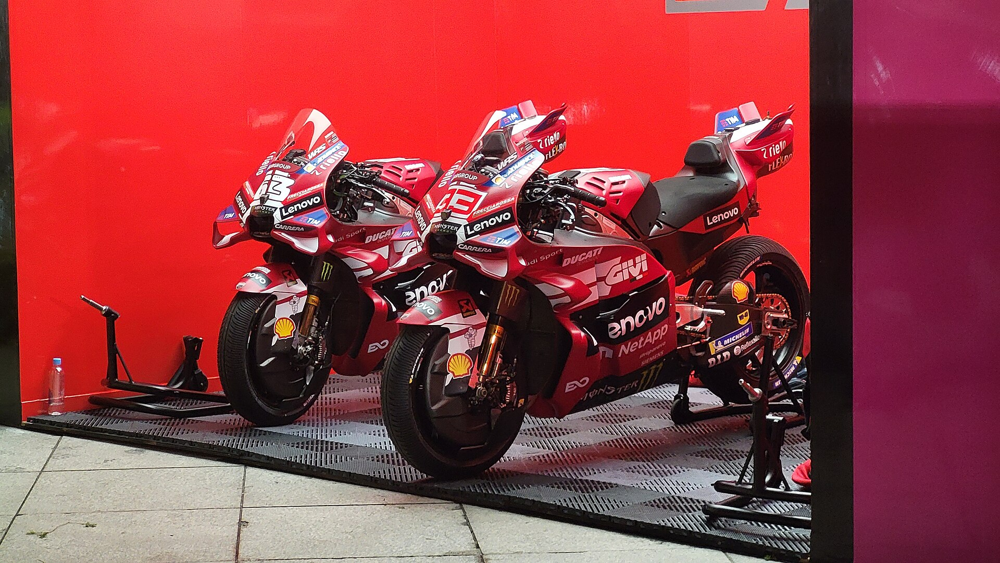

A MotoGP retoma a temporada de 2026 em um dos circuitos mais tradicionais e desafiadores do motociclismo mundial. Entre sexta-feira, 7 de agosto, e domingo, 9, o circuito de Silverstone recebe o GP da Grã-Bretanha, 12ª das 22 etapas previstas no calendário 2026.
A programação representa o retorno da principal categoria da motovelocidade depois de uma pausa de quatro semanas. Além da disputa intensa pelo título, o fim de semana terá atenção especial do público brasileiro: Diogo Moreira estará no grid da classe principal, enquanto Eric Granado chega à Inglaterra como líder da FIM Harley-Davidson Bagger World Cup.
A corrida Sprint da MotoGP será realizada no sábado, às 12h, pelo horário de Brasília. A prova principal está marcada para domingo, às 9h. O GP será disputado em 20 voltas, totalizando aproximadamente 118 quilômetros.
Silverstone abre a segunda metade do Mundial e inicia uma sequência decisiva para pilotos e equipes. Depois do GP da Alemanha, realizado entre 10 e 12 de julho, o campeonato ficou quase um mês sem corridas antes da retomada na Grã-Bretanha.
A pausa oferece tempo para recuperação física dos pilotos, análise de dados e preparação das motos, mas também cria um desafio particular. Todos precisam reencontrar rapidamente o ritmo competitivo em uma pista veloz, técnica e conhecida pelas mudanças de clima.
O circuito britânico tem 5,9 quilômetros, 18 curvas — dez para a direita e oito para a esquerda — e uma reta principal de 770 metros. A combinação de trechos de alta velocidade, mudanças rápidas de direção e freadas fortes exige confiança na dianteira da moto e precisão na escolha das trajetórias.
Curvas como Maggotts, Becketts e Chapel formam uma das sequências mais famosas do calendário. Nessa parte da pista, os pilotos precisam alternar a inclinação da moto em alta velocidade sem perder estabilidade. O vento também costuma interferir no equilíbrio, enquanto a possibilidade de chuva transforma a escolha dos pneus em um elemento estratégico importante.
O Brasil na MotoGP
Diogo Moreira chega a Silverstone em sua temporada de estreia na principal modalidade da categoria. Campeão mundial da Moto2 em 2025, o piloto paulista subiu para a classe principal defendendo a Pro Honda LCR e utilizando o número 11.
A presença do brasileiro encerrou uma ausência de quase duas décadas do país no grid titular da MotoGP. Antes de Moreira, o último representante regular do Brasil na categoria havia sido Alex Barros, que encerrou sua trajetória no Mundial ao fim da temporada de 2007.
Moreira tem mostrado evolução durante o processo de adaptação à Honda RC213V. O brasileiro já conseguiu avançar diretamente ao Q2 em diferentes etapas e alcançou o sexto lugar no GP da Hungria, seu melhor resultado até o início da passagem por Silverstone.
A pista inglesa também ocupa um espaço importante na carreira do piloto. Foi justamente em Silverstone, em agosto de 2022, que Diogo conquistou sua primeira pole position no Campeonato Mundial, ainda na Moto3, colocando a equipe MT Helmets-MSI na ponta do grid.
O conhecimento prévio do traçado pode ajudar na busca por um bom resultado, embora a experiência com uma MotoGP seja completamente diferente. A velocidade, a potência, a aerodinâmica e a exigência física da categoria principal aumentam consideravelmente o nível de dificuldade.
Para Moreira, o objetivo será aproveitar os treinos de sexta-feira para encontrar uma configuração equilibrada, garantir uma vaga competitiva no grid e permanecer próximo da zona de pontuação tanto na Sprint quanto na corrida principal.
Classificação da MotoGP antes do GP da Grã-Bretanha
Os pilotos chegam a Silverstone com uma disputa extremamente equilibrada pelo título. Apenas 24 pontos separam os cinco primeiros colocados, e Jorge Martín lidera com vantagem de 14 pontos sobre Ai Ogura. O brasileiro Diogo Moreira aparece na 15ª posição, com 48 pontos.
- Jorge Martín — 208 pontos
- Ai Ogura — 194 pontos
- Marc Márquez — 190 pontos
- Marco Bezzecchi — 186 pontos
- Fabio Di Giannantonio — 184 pontos
- Raúl Fernández — 159 pontos
- Pedro Acosta — 148 pontos
- Francesco Bagnaia — 143 pontos
- Álex Márquez — 87 pontos
- Luca Marini — 79 pontos
O cenário deixa Silverstone com peso importante na briga pelo campeonato. Os resultados da corrida podem alterar significativamente a classificação durante um fim de semana que distribui pontos na Sprint e na corrida principal.
Liderança brasileira na Copa do Mundo de Baggers
O segundo foco brasileiro do fim de semana estará na FIM Harley-Davidson Bagger World Cup. Eric Granado chega a Silverstone liderando a classificação da temporada inaugural da categoria.
O piloto da Joe Rascal Racing soma 111 pontos, apenas dois a mais que o espanhol Óscar Gutiérrez, da Niti Racing. Archie McDonald ocupa a terceira posição, com 97 pontos. A etapa britânica será a quarta das seis previstas para a temporada, aumentando o peso das duas corridas programadas para o fim de semana.
Granado assumiu a liderança após uma atuação forte em Assen. O brasileiro largou da pole position e venceu a primeira corrida da rodada neerlandesa. Na segunda prova, conquistada por Gutiérrez, Granado voltou ao pódio e garantiu os pontos necessários para chegar à Inglaterra na primeira colocação.
A Bagger World Cup utiliza motocicletas Harley-Davidson preparadas para competição. Apesar do visual robusto e das dimensões maiores, as motos recebem modificações importantes em suspensão, freios, motor, aerodinâmica e distribuição de peso.
Cada corrida em Silverstone terá sete voltas, aproximadamente 41,3 quilômetros. A temporada inaugural conta com seis etapas e 12 provas, normalmente com uma corrida no sábado e outra no domingo.
As diferenças entre MotoGP e Bagger World Cup
Apesar de dividirem o mesmo fim de semana em Silverstone, MotoGP e Harley-Davidson Bagger World Cup são competições bastante diferentes em conceito, formato e características das motocicletas.
A MotoGP é a principal categoria do motociclismo de velocidade. Suas motos são protótipos desenvolvidos exclusivamente para competição, sem versões produzidas para circulação nas ruas. Em 2026, elas utilizam motores de até 1.000 cilindradas, têm peso mínimo de 157 quilos e podem superar os 365 km/h. Aerodinâmica, eletrônica, freios, suspensão e distribuição de peso são desenvolvidos para extrair o máximo desempenho possível em cada circuito.
A Bagger World Cup, por outro lado, utiliza motocicletas baseadas na Harley-Davidson Road Glide, modelo pertencente à plataforma Grand American Touring. Embora tenham origem em motos grandes de turismo, as máquinas são profundamente modificadas para as pistas, recebendo redução de peso, preparação aerodinâmica, suspensões especiais, freios de competição e o motor Milwaukee-Eight V-Twin 131R adaptado para corridas.
As Baggers entregam mais de 200 cavalos de potência e podem chegar a aproximadamente 300 km/h. Elas são maiores, mais pesadas e visualmente mais robustas do que os protótipos da MotoGP, criando um estilo de pilotagem diferente, especialmente nas mudanças de direção, frenagens e acelerações na saída das curvas.
O formato esportivo também muda. A MotoGP possui uma Sprint no sábado e uma corrida principal no domingo, com pontuações diferentes. A Bagger World Cup realiza duas corridas completas por etapa, normalmente uma no sábado e outra no domingo. Em sua temporada inaugural, a categoria conta com seis rodadas e 12 provas, enquanto a MotoGP disputa um calendário mundial de 22 Grandes Prêmios em 2026.
Em resumo, a MotoGP representa o limite tecnológico dos protótipos de duas rodas, com motos mais leves, ágeis e velozes. A Bagger World Cup transforma grandes motocicletas touring em máquinas de competição, valorizando potência, torque, disputas próximas e o comportamento particular dos motores V-Twin.
Programação do GP da Grã-Bretanha
Todos os horários abaixo seguem o horário de Brasília.
Sexta-feira, 7 de agosto
- 7h45 — Treino livre 1 da MotoGP
- 12h — Treino da MotoGP
Sábado, 8 de agosto
- 7h10 — Treino livre 2 da MotoGP
- 7h50 — Classificação 1
- 8h15 — Classificação 2
- 12h — Corrida Sprint, com 10 voltas
Domingo, 9 de agosto
- 5h40 — Warm-up da MotoGP
- 9h — Corrida principal, com 20 voltas
Programação da Bagger World Cup
Sexta-feira, 7 de agosto
- 9h40 — Treino livre 1
- 14h05 — Treino livre 2
Sábado, 8 de agosto
- 9h10 — Classificação
- 13h10 — Corrida 1, com sete voltas
Domingo, 9 de agosto
- 12h — Corrida 2, com sete voltas
Onde assistir ao GP da Grã-Bretanha
A programação em Silverstone terá transmissão no Brasil pelos canais ESPN e pela plataforma Disney+. A cobertura inclui os treinos, a classificação, a corrida Sprint de sábado e o Grande Prêmio de domingo.
A classificação e as duas corridas da Bagger World Cup também estão previstas na programação da ESPN e do Disney+, oferecendo ao público brasileiro a oportunidade de acompanhar a defesa da liderança de Eric Granado.
Silverstone abre fase decisiva da temporada
O GP da Grã-Bretanha reúne elementos importantes para a sequência de 2026. A MotoGP volta de uma longa pausa em um circuito que não permite erros, a disputa pelo campeonato entra em sua segunda metade e os pilotos precisam recuperar imediatamente o nível máximo de concentração.
Para o Brasil, o fim de semana terá importância ainda maior. Diogo Moreira continua construindo sua primeira temporada na elite da motovelocidade em uma pista onde já viveu um momento histórico. Eric Granado, por sua vez, acelera para proteger uma liderança conquistada com velocidade, regularidade e experiência.
Com Sprint ao meio-dia de sábado, corrida principal às 9h de domingo e duas provas decisivas da Bagger World Cup, Silverstone promete um fim de semana completo para o motociclismo brasileiro.